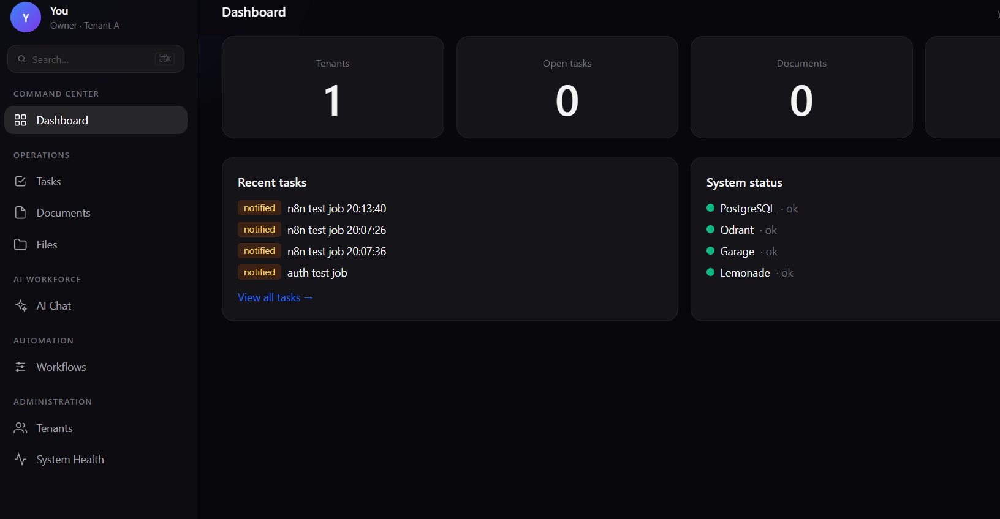
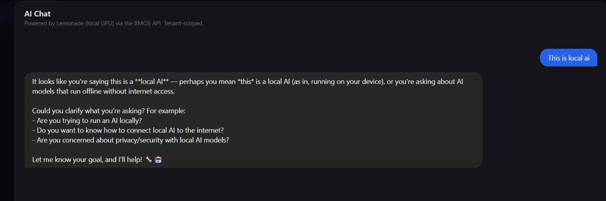
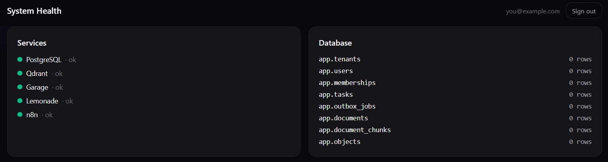

NexGen CLD v4 (BMOS 3.2) — Multi-tenant Business OS
PHP 8.4 + PostgreSQL 17 + Traefik + Nginx, with Qdrant (vector search), Garage (S3-compatible objects), pluggable AI (Lemonade local GPU, or Mistral/DeepSeek/OpenAI/Groq/Ollama), n8n (workflows), Redis (optional queue), and a locked-down agent sandbox.
Architecture: PHP-native, server-rendered. PHP owns business logic, auth, and persistence; PostgreSQL is authoritative for all business state with forced row-level security (tenant isolation is database-enforced, not code-filtered). Qdrant and Garage are rebuildable derived stores. The web UI is Tailwind CSS + HTMX + Alpine.js in a dark “Figr Identity” aesthetic.



Status
| Area | Status |
|---|---|
| Core stack (Traefik → Nginx → PHP → Postgres) | ✅ Implemented, integration tested |
| Tenant isolation (forced RLS, 9/9 tests) | ✅ Security verified |
| Stage A authentication (sessions + API keys) | ✅ Implemented, integration tested |
| Stage B: session idle timeout (8h), API key expiry/revocation | ✅ Implemented |
| Stage B: worker leases, reaper, crash recovery | ✅ Implemented |
| Stage B: read-only FS, dropped caps, no-new-privs | ✅ Implemented |
| Stage B: TLS (opt-in via docs/tls.html) | ✅ Implemented, opt-in |
| Transport (default) | HTTP-only (:80); HTTPS via opt-in |
| Remediation: agent runner v2 (allowlist, BMOS approvals) | ✅ Implemented |
| Stage B: X-Tenant-ID fully removed | ✅ Verified |
| Outbox + worker (17/17) | ✅ Implemented, integration tested |
| Qdrant vector search (11/11) | ✅ Implemented, integration tested |
| Garage S3 objects (12/12) | ✅ Implemented, integration tested |
| AI chat via provider abstraction (6/6) | ✅ Implemented, integration tested |
| n8n workflows (4/4) | ✅ Implemented, integration tested |
| Agent sandbox (7/7) | ✅ Implemented, integration tested |
| Dark web UI (dashboard, tasks, AI chat, docs, files, workflows, tenants, health) | ✅ Implemented |
| Projects, Evidence/Approvals, audit UI | ⏳ Planned (Stage D) |
Remediation (AGENT-01 through QA-01)
| Workstream | Status |
|---|---|
| AGENT-01: agent runner actually runs (not sleep) | ✅ Implemented |
| AGENT-02: allowlist execution, no shell blacklist | ✅ Implemented |
| GOV-01: BMOS-owned human approvals (migration 010) | ✅ Implemented |
| WORKER-01: process-kill crash test | ✅ Implemented (test-worker-crash.sh) |
| TLS-01: transport verification (HTTP-only / opt-in HTTPS) | ✅ Implemented |
| DOC-01: README reconciled, stale claims removed | ✅ Implemented |
QA-01: canonical scripts/verify.sh |
✅ Implemented |
Agent runner v2:
app/agent/agent-runner.php — no shell action,
no regex blacklist. Allowlisted operations only
(task.fetch, job.enqueue,
api.call, file.write, file.read,
http.fetch). Consequential actions require a BMOS approval
record (POST /approvals/request, human decides via
POST /approvals/{id}/decide). The agent can never
self-approve.
Verify everything:
bash scripts/verify.sh
Authentication: real sessions (bcrypt + httponly
cookies) and per-tenant Bearer API keys. Tenant identity comes from
verified membership — the old X-Tenant-ID demo header is
gone.
Stack
| Service | Image | Role |
|---|---|---|
| Traefik | traefik:v3 |
Edge router (:80) |
| Nginx | nginx:1.28-alpine |
PHP-FPM reverse proxy |
| PHP | php:8.4-fpm-alpine |
API + web UI (server-rendered) |
| Worker | (same PHP image) | Outbox job runner |
| Postgres | postgres:17-alpine |
Authoritative store, forced RLS |
| Qdrant | qdrant/qdrant:v1.13.0 |
Vector index (rebuildable) |
| Garage | dxflrs/garage:v2.4.1 |
S3-compatible objects |
| n8n | n8nio/n8n:1.113.0 |
Workflows (profile-gated) |
| Redis | redis:7-alpine |
n8n queue (profile-gated, optional) |
Lemonade Server runs on the Windows host (GPU), not
in Docker. PHP reaches it via LEMONADE_URL.
Quickstart
# 1. Secrets (never commit these)
mkdir -p secrets && chmod 700 secrets
openssl rand -base64 24 | tr -d '\n' > secrets/postgres_password.txt
openssl rand -base64 24 | tr -d '\n' > secrets/app_password.txt
openssl rand -base64 24 | tr -d '\n' > secrets/migrator_password.txt
openssl rand -hex 32 | tr -d '\n' > secrets/garage_rpc_secret.txt
openssl rand -base64 24 | tr -d '\n' > secrets/garage_admin_token.txt
touch secrets/garage_app_key_id.txt secrets/garage_app_secret.txt
chmod 644 secrets/*.txt
cp .env.example .env
# 2. Start core stack
bash scripts/garage-config.sh
docker compose up -d
bash scripts/migrate.sh
bash scripts/garage-init.sh
docker compose restart php nginx
# 3. Create admin user
bash scripts/seed-admin.sh
# 4. Open http://bmos.localhost/loginOptional profiles:
bash scripts/n8n-init.sh
docker compose --profile n8n up -d # n8n (regular mode)
docker compose --profile n8n --profile queue up -d # + Redis queue mode
docker compose --profile agents up -d # agent sandboxTest suites
bash scripts/test-isolation.sh # 9 passed — RLS tenant isolation
bash scripts/test-outbox.sh # 17 passed — transactional outbox
bash scripts/test-qdrant.sh # 11 passed — vector search, tenant-filtered
bash scripts/test-garage.sh # 12 passed — S3 objects, presigned URLs
bash scripts/test-lemonade.sh # 6 passed — local AI chat
bash scripts/test-ai-providers.sh # 25 passed — provider abstraction (offline)
bash scripts/test-crm.sh # CRM 1.0 — leads/accounts/contacts/notes/activities + RLS
bash scripts/test-n8n.sh # 4 passed — workflow integration
bash scripts/test-auth.sh # 6 passed — session auth, API keys
bash scripts/test-agents.sh # 7 passed — sandbox isolation
bash scripts/test-redis.sh # queue mode (optional)
# Stage B:
bash scripts/test-cross-tenant.sh # cross-tenant isolation via HTTP
bash scripts/test-worker-recovery.sh # kill worker mid-job, verify reaper
bash scripts/test-hardening.sh # read-only FS, caps, no-new-privs
bash scripts/test-tls.sh # HTTPS, redirect, cert validityStage B — security & reliability
Auth hardening: - Session idle timeout (8 hours) -
API keys: expiration (expires_at) and revocation
(revoked_at) - Secure cookie flag auto-enabled over HTTPS -
X-Tenant-ID demo header fully removed from code and
tests
Worker reliability: - Leases: claimed jobs hold a
60s lease, renewed via heartbeat - Reaper:
app.reap_expired_leases() (SECURITY DEFINER) recovers dead
workers’ jobs - Bounded retries (max 5) with exponential backoff →
dead-letter - All handlers must be idempotent
Container hardening: - Read-only root filesystems
(php, nginx, worker) with tmpfs for /tmp - cap_drop: [ALL]
everywhere; minimal caps added back only where needed -
no-new-privileges on all services - Docker socket: Traefik
only (read-only, documented); all others have none -
Postgres/Qdrant/Garage: backend network only, no published ports
TLS (opt-in): - Default is HTTP-only on :80. To
enable HTTPS: see docs/tls.md. - When enabled: Traefik
HTTPS on :443, HTTP→HTTPS redirect (301), TLS 1.2+ with strong cipher
suites. - Local dev certs:
bash scripts/generate-dev-certs.sh - Trust the CA: import
docker/traefik/certs/ca.crt (Windows certmgr.msc) or copy
to /usr/local/share/ca-certificates/ (Linux).
Agent sandbox: - Real runner:
app/agent/agent-runner.php (replaces sleep-infinity) -
Disposable /tmp workspaces, wiped after each task - Scoped
BMOS API keys (tenant-bound, expirable) - Destructive commands blocked
without human approval file
Web UI
Server-rendered PHP + Tailwind (CDN) + HTMX + Alpine.js, dark theme. Sidebar: Command Center / Operations / CRM / AI Workforce / Automation / Administration.
/login— sign in (bcrypt sessions)/dashboard— stats, recent tasks, system status/tasks— task management (HTMX)/crm— CRM 1.0: leads, companies, contacts, notes, activities, search (see docs/crm.html)/ai-ui— AI chat (configurable provider; see docs/ai-providers.html)/documents— document search/objects-ui— file upload/download (presigned URLs)/workflows— n8n integration dashboard/tenants,/health-ui— administration
Auth model (Stage A)
POST /auth/login→ bcrypt verify → PHP session (httponly cookie)- Tenant comes from verified membership, never a client header
Authorization: Bearer bmos_<key>for server-to-server (n8n)app.usersRLS uses SECURITY DEFINER functions owned bybmos_migrator(login must bypass RLS before identity is known)
Notes
- Two networks:
edge(Traefik, Nginx) andbackend(internal). - Postgres is not published; app connects via
postgres:5432. - Secrets: file-based Compose secrets under
secrets/(chmod 644 so www-data can read; the 700 directory blocks other host users). Out of Git. - Roles:
bmos_owner(owns objects, no login),bmos_migrator(migrations),bmos_app(runtime,NOBYPASSRLS). RLS is forced. - Liveness vs readiness:
/healthnever touches the DB;/readyconnects asbmos_app. - Worker: handles SIGTERM gracefully. A crash mid-job
leaves the row in
claimed— no automatic reaper yet (Stage B). Handlers must be idempotent.
Version matrix
| Component | Image / version used | Notes |
|---|---|---|
| Traefik | traefik:v3 |
Observed 3.7.17, 2026-11-01 |
| Nginx | nginx:1.28-alpine |
|
| PHP | php:8.4-fpm-alpine |
pdo_pgsql, pcntl compiled in |
| PostgreSQL | postgres:17-alpine |
|
| Qdrant | qdrant/qdrant:v1.13.0 |
Derived vector index only |
| Garage | dxflrs/garage:v2.4.1 |
S3-compatible, backend-only |
Phase build notes (historical)
Phase 5 — Outbox pattern
POST /jobs/enqueue writes a business record
(app.tasks) and the outbox job
(app.outbox_jobs) in one transaction.
Duplicate idempotency_key returns the original with
"deduplicated": true.
FOR UPDATE SKIP LOCKED → works → records done/backoff/dead.
Phase 6 — Qdrant as derived index
PostgreSQL is authoritative; Qdrant holds vectors only. Every point carriestenant_id, so the collection can be wiped and
rebuilt from PG at any time. Embeddings are demo placeholders
(DemoEmbeddings); swap in a real model via
QDRANT_VECTOR_SIZE.
Phase 7 — Garage S3 objects
PG holds metadata; Garage holds bytes. Clients use presigned URLs minted by PHP after BMOS authorization. Garage S3 API is backend-only, no published ports.Phase 8 — Lemonade (Windows host)
Stays on the Windows host (GPU), not a container. PHP reaches it viaLEMONADE_URL. No DB credentials to Lemonade; pure
inference. Qwen3.5 requests set
chat_template_kwargs.enable_thinking=false.
Phase 17 — AI provider abstraction
AI_PROVIDER selects the inference backend:
lemonade (default, local), mistral,
deepseek, openai, groq,
ollama, or custom (any OpenAI-compatible
endpoint). API keys via env or <NAME>_FILE Docker
secret. /ai/health exposes provider/model/endpoint, never
keys. Full guide: docs/ai-providers.md. Tests:
scripts/test-ai-providers.sh.
Phase 9/10 — n8n (+ Redis queue)
Profile-gated. n8n calls BMOS APIs only — never bypasses auth, never gets DB credentials. Regular mode first; Queue Mode is opt-in via.env.
Phase 11 — Agent sandbox (last)
No Docker socket, no DB credentials, no secrets. Backend network only — calls BMOS APIs viahttp://nginx with auth enforced.